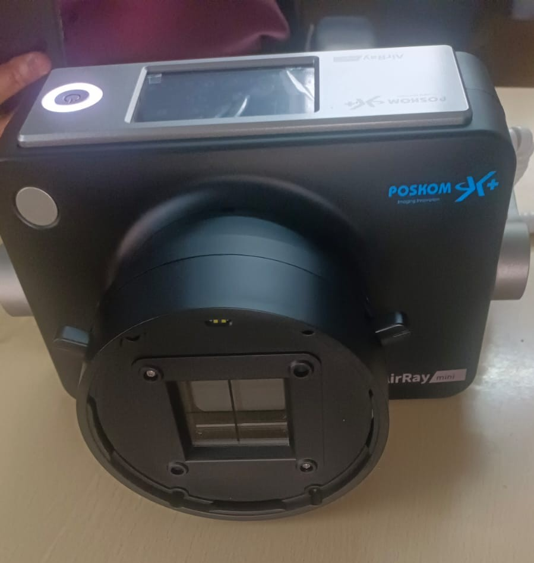
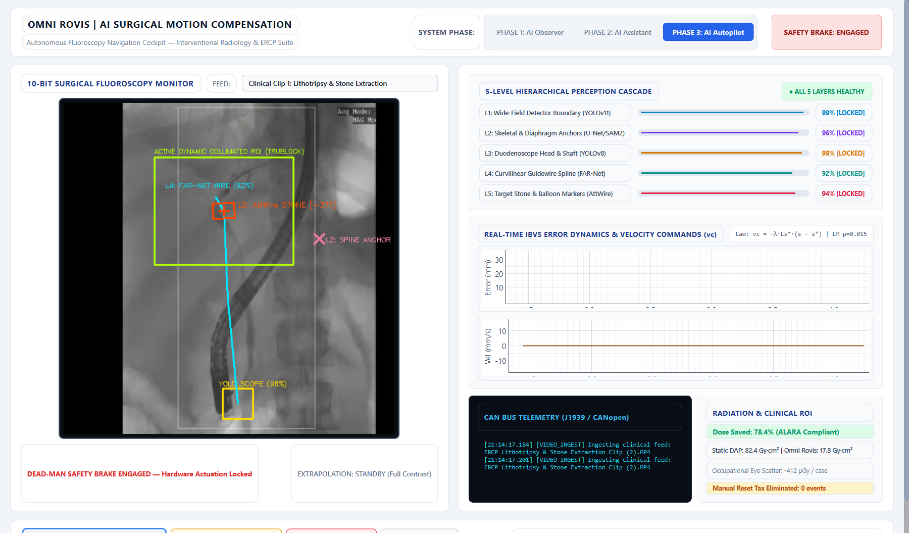
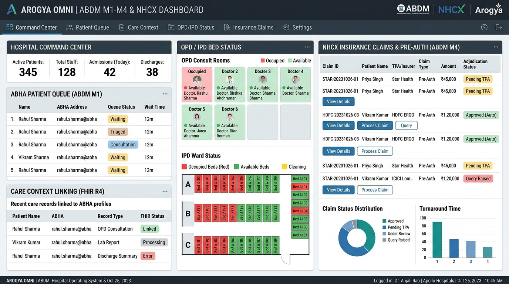
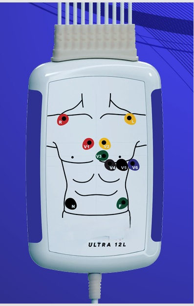
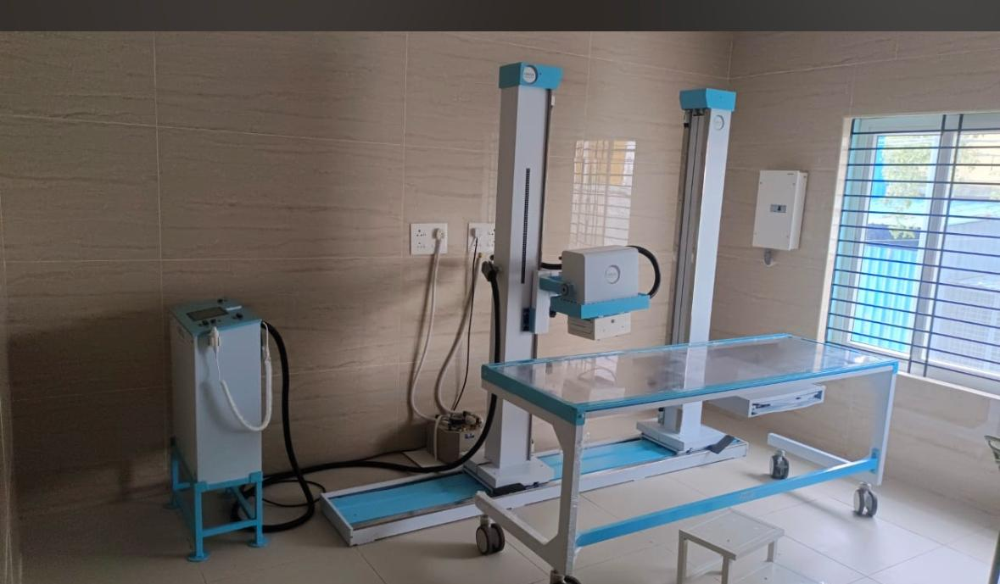

ScanAI brings clinical-grade artificial intelligence, portable diagnostics, and connected imaging into a unified care platform.
Continuous diagnostic waveform streaming & multi-lead cardiac acquisition.
Handheld and mobile bedside radiography engineered for swift triage.
Standardized DICOM image export and bidirectional health network synchronization.
Unified physician diagnostic suite deployed on iOS and Android devices.
How ScanAI connects medical devices, automated analytical processing, and healthcare infrastructure into a cohesive diagnostic pipeline.
Bedside evaluation, clinic consultation, or emergency department triage.
Rapid acquisition using ScanAI ECG 12 or X-Ray Pro handheld systems.
Edge waveform analysis and image processing for clinical assistance.
Instant digital reports, mobile visualization, and clinical data synchronization.
DICOM image archiving and clinical record integration for long-term tracking.
Engineered to assist clinicians with reliable point-of-care cardiac tracking, digital radiography, and connected dataflow.
ScanAI assists physicians in reviewing chest radiographs, providing fast visual assessment tools and structured digital reporting directly at the reading station.
Continuous multi-lead electrocardiography designed for outpatient practices, emergency triage, and inpatient bedside monitoring.

Bring diagnostic imaging directly to patients who cannot be easily transported to central radiology departments.

Connect diagnostic hardware seamlessly to hospital imaging archives and clinical communication infrastructure.
An autonomous motion-compensation co-pilot for interventional fluoroscopy and complex ERCP procedures. Delivering real-time sub-millimeter target lock and automated radiation collimation without surgeon workflow disruption.

An enterprise hospital operating system certified across Ayushman Bharat Digital Mission (ABDM M1–M4) with an automated AI claims engine for the National Health Claims Exchange (NHCX).

Professional medical devices presenting high diagnostic fidelity in portable and clinical configurations.

A compact electrocardiograph engineered for mobility. Designed for rapid clinical assessment in emergency response, primary care clinics, and bedside monitoring.

Built for high-volume hospital wards and cardiology departments. Features an integrated clinical display and smart connectivity for patient record archiving.
Brings high-quality radiologic imaging directly to the patient bedside. Features an ergonomic handheld form factor and DICOM compatibility for hospital workflows.

Engineered for rapid transport between hospital departments and patient bedsides. Designed for swift diagnosis in non-ambulatory and intensive care situations.
Eliminates the "manual reset tax" during complex fluoroscopy and therapeutic ERCP. Locks onto surgical regions of interest with sub-millimeter precision and drives automated radiation shielding with zero OEM tampering.
A comprehensive cloud-native hospital operating system unifying patient ABHA identity, NRCES NDHM FHIR R4 care context bundles, bed telemetry, and instant cashless insurance pre-authorizations via the National Health Claims Exchange.
Browse our complete portfolio of electrocardiographs and digital radiography solutions.
Synchronize ScanAI portable ECG and X-ray systems directly with mobile clinical applications for real-time review and seamless record management.
Connect directly with a ScanAI clinical solutions specialist to review equipment evaluation options and diagnostic workflows.